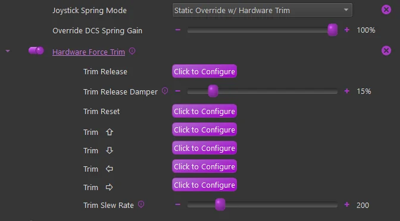

1. DCS¶
1.1 Understanding Native DCS FFB, TelemFFB, and VPforce Configurator¶
To effectively use TelemFFB, it is important to understand how native simulator FFB effects, TelemFFB effects, and VPforce Configurator device settings interact with one another.
1.1.1 Native DCS FFB Effects¶
DCS sends native force feedback effects directly to your FFB device without any involvement from TelemFFB. These effects vary by aircraft module and typically include:
- Aerodynamic buffeting - Stall buffet, AoA buffeting, and other aerodynamic shaking
- Dynamic stick forces - Changes in control resistance based on airspeed and flight conditions (Typically warbirds, Mig-21, etc.)
- Overspeed buffeting - Shaking when aircraft exceeds safe speeds (Su-25T)
Important
DCS native FFB effects will work even if TelemFFB is not running, provided your device driver and VPforce Configurator are properly installed.
Rendering DCS’s native effects through TelemFFB
The DirectInput Tap captures the effects DCS computes and renders them through TelemFFB instead, with a per-type enable and gain for each of the game’s effects, and axis corrections for its spring. See that page for setup.
Module-specific FFB implementation varies. Eagle Dynamics does not publish a comprehensive list of native FFB effects per-module, so discovery typically requires testing in the aircraft itself or consulting module-specific community resources and forums.
1.1.2 TelemFFB Effects: Supplemental vs. Override¶
TelemFFB operates in one of two ways relative to native DCS FFB:
Supplemental Mode (Default)
- TelemFFB adds additional effects on top of native DCS FFB effects
- Native DCS effects (spring, buffeting, etc.) continue unmodified from the simulator
- TelemFFB contributes new effects like engine rumble customization, gunfire enhancement, helicopter ETL shaking, and other telemetry-driven effects
- Both the simulator and TelemFFB are generating forces simultaneously on the device
Override Mode (Optional)
- TelemFFB can be configured to take control of certain effects, particularly spring management
- When override is enabled for an effect, TelemFFB’s implementation replaces the native DCS effect
- This is useful when you want to customize how forces feel beyond what DCS provides by default
- Overrides are configured on a per-aircraft basis in TelemFFB’s settings
1.1.3 VPforce Configurator Device Settings¶
VPforce Configurator controls how your physical device responds to all incoming FFB commands, whether they originate from DCS or TelemFFB. These device-level settings include:
- Spring Gain - Overall strength of spring/centering forces
- Damper - Resistance and smoothing of stick movement
- Inertia - Rotational inertia of the stick
- Friction - Static friction when the stick is moving
- Master Gain - Overall FFB intensity multiplier
Critical Point
Adjusting VPforce Configurator gains affects all FFB effects equally. If you increase spring gain in Configurator, both native DCS spring forces and any TelemFFB-generated spring forces become proportionally stronger or weaker.
1.1.4 Signal Flow: From Simulator to Device¶
DCS Simulator
↓ (native FFB effects)
+─→ FFB Device (via OS/driver)
└─→ VPforce Configurator settings applied
↓
Physical motor output
TelemFFB (if running)
↓ (supplemental/override effects)
+─→ FFB Device (via OS/driver)
└─→ VPforce Configurator settings applied
↓
Physical motor output (combines with DCS effects)
Both DCS and TelemFFB send their force commands to the same device. The device receives all commands and applies VPforce Configurator settings (gains, damping, etc.) to determine the final motor behavior.
1.1.5 Testing Without TelemFFB¶
To experience and evaluate native DCS FFB effects without any TelemFFB customization:
- Close TelemFFB entirely
- Verify your VPforce Configurator device settings are configured appropriately
- Start DCS and load the aircraft/module you want to test
- Reproduce flight conditions (stall, high-G turns, gunfire, landing, etc.)
- Observe and evaluate the native FFB behavior
- Adjust VPforce Configurator gains and apply (not store) to see how device settings affect the feel
This baseline understanding of native DCS behavior will help you make informed decisions about which TelemFFB customizations are useful for your preferences.
1.1.6 When TelemFFB is Running¶
When TelemFFB is running and connected to a loaded aircraft:
- Native DCS FFB effects continue to be sent to the device
- TelemFFB simultaneously adds or (if configured) overrides specific effects
- VPforce Configurator settings shape how all incoming FFB commands are rendered on the device
- Changing a TelemFFB setting takes effect nearly immediately (slight delay while the application processes the adjustment)
TelemFFB can also dynamically push VPforce Configurator profiles or individual gain overrides to your device. These changes affect how subsequent FFB commands from both DCS and TelemFFB are rendered.
1.1.7 Monitoring DCS vs TelemFFB Effects Using the Configurator Debug Tab¶
VPforce Configurator includes a debug tab that displays all FFB effects being sent to your device in real-time. Each effect is labeled with an effect ID and includes a source badge that identifies where the effect originates.
Effect Source Badges:
The debug tab displays source badges for each effect:
- configurator - Effects generated by VPforce Configurator device firmware (reserved effects with ID ≤ 4)
- game - Effects generated by DCS (native FFB effects with ID > 4)
- telemFFB - Effects generated by the TelemFFB application
These badges make it easy to quickly identify which system is responsible for each effect without needing to manually reference effect IDs.
Testing Procedure:
To isolate and observe native DCS FFB effects without TelemFFB interference:
- Close TelemFFB completely
- Open VPforce Configurator and navigate to the debug tab
- Start DCS and load the aircraft/module you want to test
- In the debug tab, you will see effects appearing in real-time as you fly
- Look for effects with the game badge; these are native DCS effects that demonstrate what the simulator provides by default
- Reproduce specific flight conditions (stall, high-G maneuvers, gunfire, landing) to observe corresponding effects
- Note which DCS effects are active and their behavior with your current VPforce Configurator settings
With TelemFFB Running:
When you restart TelemFFB after completing your DCS-only testing:
- The debug tab will show effects with all three source badges: configurator, game, and telemFFB
- Effects with the telemFFB badge are supplemental effects added by TelemFFB
- You can compare the effect list before and after TelemFFB is running to understand what supplemental effects TelemFFB adds
- This helps you make informed decisions about which TelemFFB customizations enhance your experience
Tip
Save a screenshot or note of the effect IDs you see in the debug tab while running DCS alone. This baseline reference makes it easier to identify TelemFFB-specific effects when you enable TelemFFB later.
1.2 Joystick Spring Mode¶
Several different spring modes are available. Different options will be available depending on the selection
-
None (Game Managed) - (Default)
- No Spring effect is supplied by TelemFFB. The game is left to manage its own spring
-
Game Managed (DirectInput Tap)
- The game’s own spring, captured by the DirectInput Tap and rendered by TelemFFB, with per-axis corrections and gain. Requires the tap to be installed and capturing the device.
-
Static Override w/ Hardware Trim
- A static spring with configurable gain is started and will override the game spring effect.
- Hardware force trim settings are available

-
Advanced Dynamic
- See the *Advanced Dynamic Spring documentation
1.3 Pedal Spring Mode¶
DCS does not natively support FFB pedals. TelemFFB has implemented basic FFB capabilities.
The following modes are supported:
-
None (Game Managed)
- Do not use. DCS does not send pedal FFB, so pedals will have no centering force.
-
No Spring (Helicopter default)
- A “zero gain” spring effect will be started to override the game spring effect
-
Static Spring (Jet default)
- A configurable static gain spring effect will be started.
-
Dynamic Spring (Prop/Turboprop default)
- A spring effect will be started that stiffens as airspeed increases. The speed range at which the spring stiffens is pre-defined based on published aircraft speed envelope data
-
Dynamic w/ Custom Speeds
- Same as Dynamic but with configurable speed ranges
-
Advanced Dynamic
In Dynamic Spring mode, the pedal force builds from the Pedal Spring Gain setting: the first 25% of the force accumulates between 0 and the aircraft’s VS (stall) speed, and the remaining 75% between VS and VNE. All of the DCS warbirds have default V-speed values built into the application; the V-speeds and gains can be overridden per aircraft in the Advanced Pedal Mode Settings (Stall Speed VS, VS Gain, Never Exceed Speed VNE, VNE Gain).
Pedal trimming is supported for fixed-wing aircraft that have rudder trimmers (default ON for propeller and jet aircraft). Helicopter pedal trimming is not supported: the “instant trim” options in the sims produce a double-input effect that cannot be reconciled with FFB trim following, and modules like the Mi-24 emulate a foot microswitch whose modes do not integrate with it either. In practice this does not matter; helicopters default to the springless pedal mode, which makes pedal trimming unnecessary.
1.4 Collective Spring Mode¶
For a VPforce-powered collective, two modes are available for helicopters:
- No Spring - the collective moves freely, held only by the friction/damper forces in your VPforce Configurator profile.
- Hardware Force Trim - a spring holds the collective at its trimmed position; hold the trim release button to move it and it locks where you let go.
The behavior and button configuration are identical to the MSFS/X-Plane implementation; see Collective Spring Mode for details.
1.5 Low Hydraulic Pressure Effect¶
See the Low Hydraulic Pressure Effect documentation. The effect works largely the same way for DCS.
Support is currently limited to:
-
UH-1, SA342, Mi-8, Mi-24, KA-50
-
A-10C, AV-8B, F-14, F15ESE
The primary difference is that for each DCS aircraft, the telemetry must be individually sourced in a unique way per aircraft. As such, the supported aircraft are limited at this time. See the TelemFFB release notes for the supported aircraft.
For DCS Aircraft, the Hydraulic System Threshold setting has already been coarsely configured for each of the supported aircraft, depending on how the data is being read and what the normal values are.
1.6 Autopilot Oscillation with FFB¶
Some DCS aircraft experience pitch or roll oscillations when engaging autopilot modes (attitude hold, altitude hold, etc.) with an FFB joystick connected. This is caused by a mismatch between the physical stick position and the virtual stick position in the simulator: the autopilot commands a stick position through the spring effect, the FFB device overshoots or lags slightly, and the autopilot overcorrects. DCS has inherent lag in its virtual control loop that amplifies this feedback loop, producing several oscillation cycles before stabilizing, or in some cases never fully stabilizing.
This behavior is a DCS-side limitation in how the simulator’s autopilot interacts with DirectInput force feedback. It is not caused by the Rhino hardware, VPforce Configurator, or TelemFFB.
Diagnostic check:
- Open the DCS controls indicator with
RCtrl+Enter - Engage the autopilot mode and observe the stick position
- If the stick input visibly lags behind or hunts around the commanded trim position, the autopilot-FFB control loop is unstable
What you can try:
- Ensure DCS Axis Tune deadzone is set to
0; do not stack the DCS deadzone on top of a firmware deadzone, as this can make the oscillation worse - Enable Adaptive Recentering in VPforce Configurator (Effects tab); this automatically adjusts the stick center to match the current trim point, reducing the position mismatch that drives the oscillation
Adaptive Recentering Exception
If using HPG Force Mode (experimental), ensure Adaptive Recentering is disabled in the VPforce Configurator, as it can interfere with the force-based hands-on detection hysteresis.
- For supported aircraft, TelemFFB’s Dynamic Deadzone automatically activates a deadzone when the autopilot engages, preventing the stick from feeding small position errors back into the AP control loop. The deadzone is removed when the AP disengages, restoring full precision
- Not all aircraft are affected equally; the behavior depends on how each module implements autopilot control surfaces
For detailed troubleshooting steps including input deadzone configuration and manual stick synchronization, see Autopilot Misbehaving or Disengaging Unexpectedly.
Note
TelemFFB’s Autopilot Following feature (axis control + trim/AP tracking) is available for MSFS and X-Plane only. It does not apply to DCS. However, TelemFFB’s Dynamic Deadzone feature does work in DCS for supported aircraft.